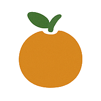

The Human Dillema (25)
Impermanence (5)
Suffering (5)
Fear (3)
Sickness (2)
Ageing (1)
Death (5) – Cluster includes: Death, Recollection/Death
Grief (4)
The Three Refuges (14)
Three Refuges (1)
Buddha (5) – Cluster includes: Buddha, Recollection/Buddha, Buddho mantra
Dhamma (4) – Cluster includes: Dhamma, Recollection/Dhamma
Saṅgha (4) – Cluster includes: Saṅgha, Recollection/Saṅgha
Foundations of Dhamma Practice (20)
Spiritual friendship (1) – Cluster includes: Spiritual friendship, Association with people of integrity
Generosity (3) – Cluster includes: Generosity, Recollection/Generosity
Goodwill (3)
Virtue (4) – Cluster includes: Virtue, Recollection/Virtue
Precepts (6) – Cluster includes: Precepts, Five Precepts, Eight Precepts
Renunciation (3)
Suffering (2)
The Fourth Noble Truth of the Path to the Cessation of Suffering is equivalent to the Noble Eightfold Path below.
Middle Path (3)
Eightfold Path (2)
Right View (4)
Right Intention (4) – Cluster includes: Right Intention, Renunciation, Goodwill, Compassion
Right Speech (5) – Cluster includes: Right Speech, False speech, Malicious speech, Harsh speech, Idle chatter, Admonishment/feedback
Right Action (2) – Cluster includes: Right Action, Killing, Stealing, Sexual misconduct
Right Livelihood (2)
Right Effort (3)
Right Mindfulness (5) – Cluster includes: Right Mindfulness, Ardency, Clear comprehension
Right Concentration (5) – Cluster includes: Right Concentration, Directed thought and evaluation, Rapture, Unification, Jhāna
Meditation Practices (41)
Meditation (4) – Cluster includes: Meditation, Meditation/General advice
Mindfulness of body (7) – Cluster includes: Mindfulness of body, Unattractiveness, Elements, Body scanning
Chanting (3)
Recollection (3)
Tranquility and insight (4) – Cluster includes: Calming meditation, Insight meditation
Continuity of mindfulness (5) – Cluster includes: Continuity of mindfulness, Present moment awareness
Knowing itself (3)
Skillful Qualities (44)
Faith (5)
Energy (2) – Cluster includes: Energy, Devotion to wakefulness
Mindfulness (5)
Concentration (5)
Discernment (5) – Cluster includes: Discernment, Investigation of states, Appropriate attention
Skillful desire (2)
Patience (3)
Happiness (5)
Gratitude (1)
Compassion (4)
Equanimity (5)
 Unskillful Qualities (41)
Unskillful Qualities (41)
Defilements (5) – Cluster includes: Unwholesome Roots, Unskillful qualities
Sensual desire (4) – Cluster includes: Sensual desire, Greed
Aversion and Ill-will (5) – Cluster includes: Aversion, Ill-will
Sloth and torpor (3)
Doubt (3)
Delusion (3)
Proliferation (2)
Views (2)
Conceit and guilt (7) – Cluster includes: Conceit, Guilt/shame/inadequacy, Judgementalism, Perfectionism, Jealousy, Competitiveness, Selfishness, Self-pity
Ignorance, Craving, Clinging, and Becoming appear in Dependent Origination below.
 Buddhist Perspectives on the World (22)
Buddhist Perspectives on the World (22)
Conditionality (2)
Kamma (2)
Rebirth (3)
Not-self (5)
Nature of mind (4)
Realms of existence (6) – Cluster includes: Realms of existence, Brahma gods, Deva, Human, Ghost, Animal, Hell, Non-human beings, Recollection/Devas
Ignorance (1)
Consciousness (2)
Name and form (2)
Sense bases (1)
Contact (1)
Feeling (2)
Craving (3)
Clinging (2)
Becoming (3) – Cluster includes: Becoming, Craving not to become
 Fruits of the Practice (18)
Dispassion (3) – Cluster includes: Dispassion, Disenchantment, Cessation
Relinquishment (4)
Liberation (2) – Cluster includes: Liberation, Release
Stages of awakening (4) – Cluster includes: Stages of awakening, Stream entry, Once return, Non-return, Arahant
Nibbāna (5) – Cluster includes: Nibbāna, Deathless, Unestablished consciousness, Unconditioned, Recollection/Peace
Teaching Dhamma (3) – Cluster includes: Teaching Dhamma, Gradual Teaching, Questions, Dhamma discussion, Stories, Symbolism
Teachers (5) – Cluster includes: Teachers, Mentoring, Personal presence, Fierce/direct teaching
Ajahn Mun (3)
Ajahn Chah (7)
Ajahn Sumedho (4)
Ajahn Pasanno (7)
Monastic Life (42)
Monastic life (7) – Cluster includes: Monastic life, Ordination, Sequence of training, Dependence, Monastic routine, Perception of a samaṇa, Simplicity
Motivation (2)
Mutual support (3) – Cluster includes: Mutual lay/Saṅgha support, Almsround
The Four Requisites (7) – Cluster includes: Requisites, Robes, Almsfood, Almsbowl, Lodging, Medicinal requisites, Monastic crafts, Building projects
Vinaya (5) – Cluster includes: Vinaya, Pāṭimokkha, Confession, Protocols, Not handling money, Rains retreat
Monastic community (7) – Cluster includes: Fourfold Assembly, Saṅgha, Communal harmony, Principles of Cordiality, Saṅgha decision making, Abbot, Monastery organizational structure
Ascetic practices (5) – Cluster includes: Ascetic practices, Tudong, Fasting, Sitter's practice
Women's monastic forms (2) – Cluster includes: Women's monastic forms, Bhikkhunī, Sīladharā, Mae Chee
Monasteries (11)
Language (3) – Cluster includes: Language, Pāli, Translation
Thai culture (6) – Cluster includes: Culture/Thailand, Thai, History/Thai Buddhism
Western culture (3)
Everyday life (5) – Cluster includes: Everyday life, Lay life
Health (4) – Cluster includes: Health, Exercise, Smoking, Mental illness, Health care, Pandemic
Family (4) – Cluster includes: Family, Parents, Children
Relationships (3)
Community (6) – Cluster includes: Community, Communal harmony, Conflict, Leadership
Environment (3)
Work (2) – Cluster includes: Work, Retirement
Politics and society (6) – Cluster includes: Politics and society, Education, Service, Activism, Non-profit organizations, Corruption, Crime, Discrimination, Military
Commerce and economics (4) – Cluster includes: Commerce/economics, Poverty
Technology and media (4) – Cluster includes: Technology, Industry, Science, Media, News, Advertizing, Internet, Social media, Online community